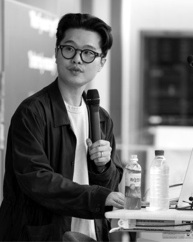
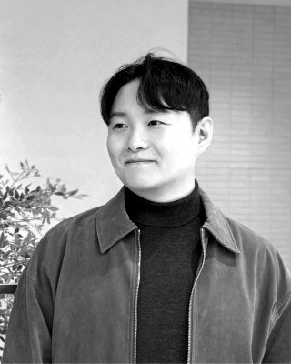
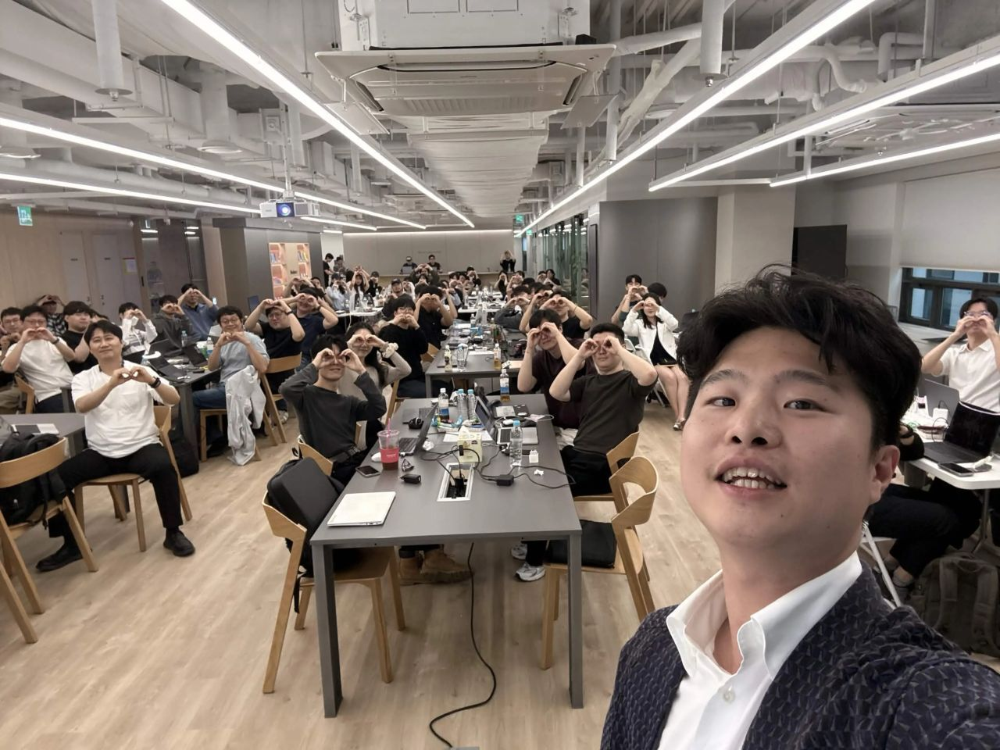
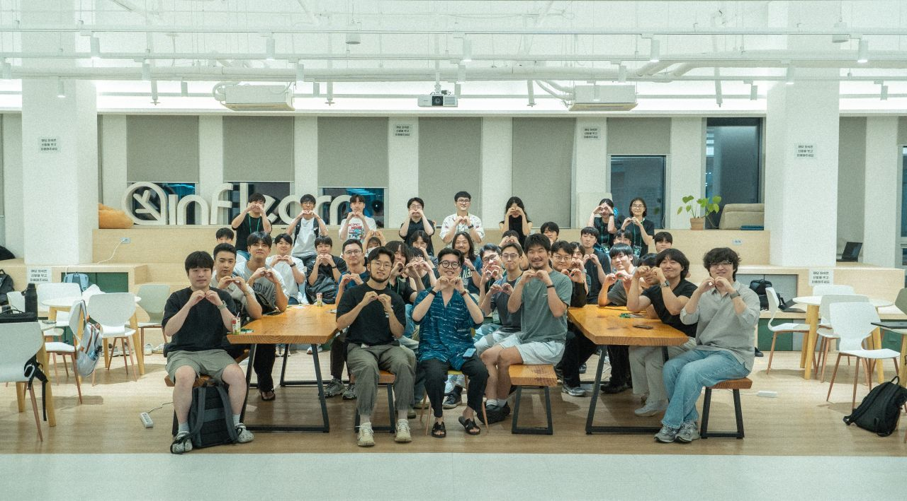
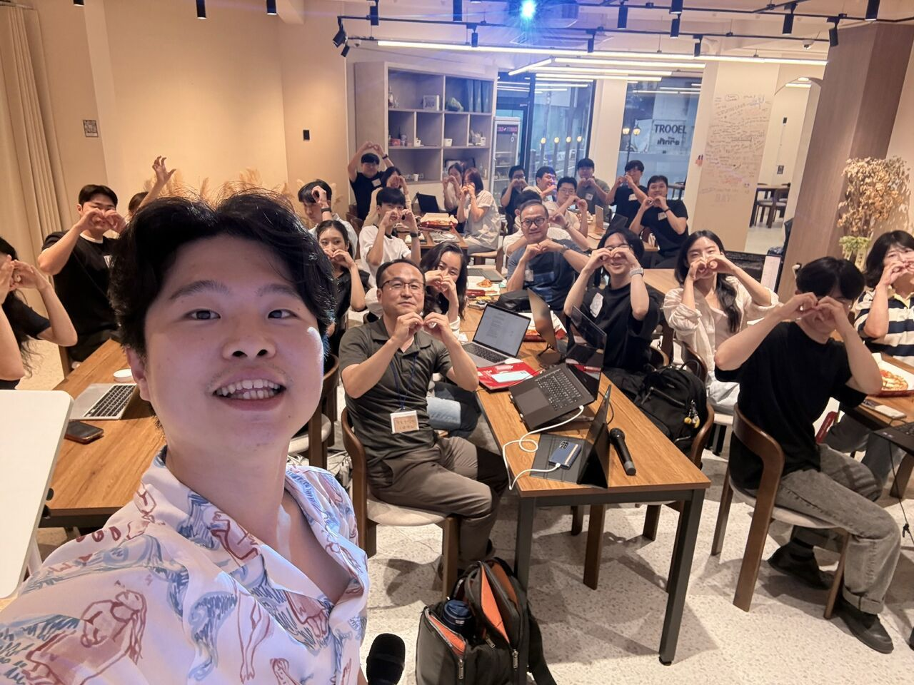
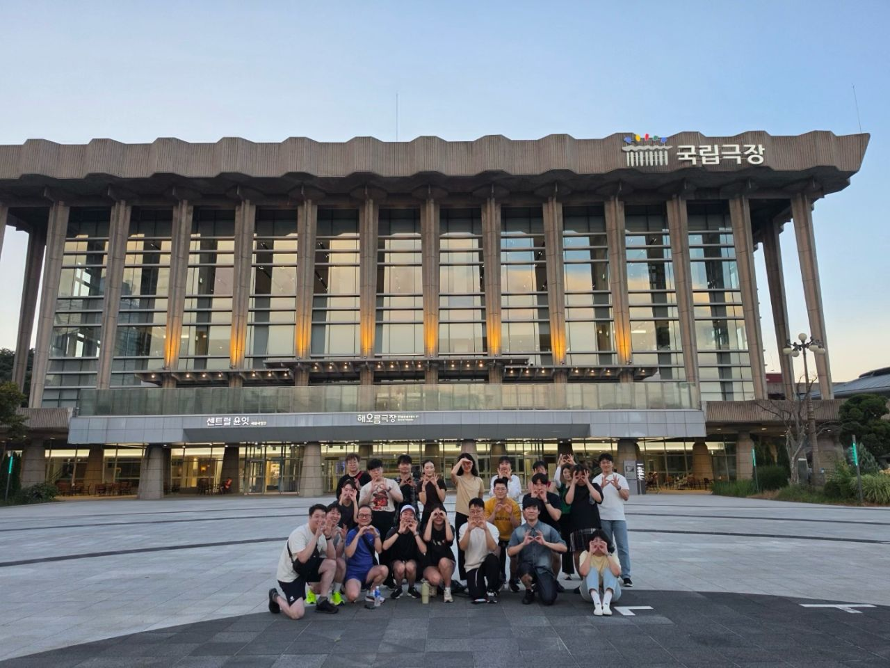
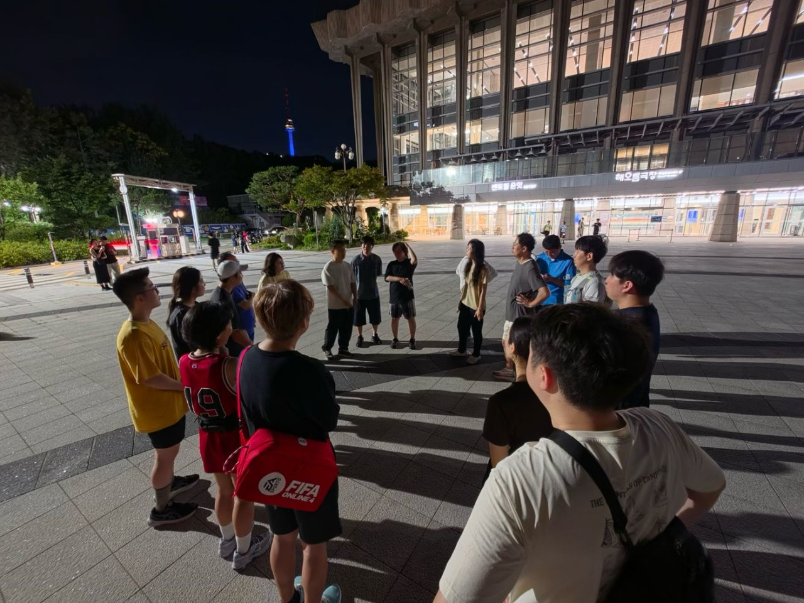

For whom
Founders, executives, 10-year specialists and solo founders who know their work deeply but are still new to AI.자기 일은 누구보다 잘 알지만 AI는 아직 손에 익지 않은 대표·임원·현업 전문가·1인 창업자.
A selective AI community
for founders and decision-makers
대표·창업자·의사결정권자를 위한 선발제 AI 커뮤니티
Selective, limited seats. We may close early. Cohort 01 is the founding cohort.선발제 · 정원 제한 · 조기 마감될 수 있습니다. 1기는 Founding Cohort입니다.
What is OOO Seed
회사를 이끄는 사람이 AI를 직접 다뤄 보는 자리
The team that built Ouroboros, an open-source AI agent framework with 6,100+ GitHub stars, sits beside founders, executives and senior specialists for three months, until each of them hands real work to an AI agent. 100 selected · 7 Sundays · free with a refundable deposit · no coding needed.오픈소스 AI 에이전트 프레임워크 Ouroboros(GitHub 별 6,100개 이상)를 만든 팀이 3개월 동안 대표·임원·현업 전문가 곁에 붙어, 각자 자기 일을 AI 에이전트에게 맡길 때까지 돕습니다. 100명 선발 · 7번의 일요일 · 참가비 무료(보증금 반환) · 코딩 경험 불필요.
Founders, executives, 10-year specialists and solo founders who know their work deeply but are still new to AI.자기 일은 누구보다 잘 알지만 AI는 아직 손에 익지 않은 대표·임원·현업 전문가·1인 창업자.
The creator and maintainers of Ouroboros: a SeoulTech professor, an Ouro Labs researcher and a CPA running an AI-native accounting firm.Ouroboros 창시자와 메인테이너. 서울과기대 교수, Ouro Labs 연구자, 회계법인을 AI 네이티브로 바꾸는 회계사.
One working agent from every session, and by January a workflow of your own that runs every day.회차마다 직접 만든 에이전트 하나, 1월에는 매일 혼자 도는 나만의 워크플로우.
People who make the next call
다음 결정을 내리는 사람
Sound familiar?이런 생각, 해 본 적 있다면
Who it's for
이런 분을 위한 과정입니다
In Seed you buildSeed에서 만드는 것A morning brief that bundles yesterday’s results, schedule and mail · your own AI adoption criteria전날 실적·일정·메일을 묶어 출근 전에 받는 경영 브리핑 · 우리 회사 AI 도입 판단 기준
In Seed you buildSeed에서 만드는 것A review agent that checks reports against your criteria · a checklist for access, cost and accountability보고서를 내 기준으로 검토하는 에이전트 · 권한·비용·책임 체크리스트
In Seed you buildSeed에서 만드는 것A quote and proposal agent that knows your rules · an agent that matches evidence and documents사내 규정을 아는 견적·제안서 에이전트 · 증빙·자료 대조 에이전트
In Seed you buildSeed에서 만드는 것First-response agent for customer inquiries · proposal drafts · competitor news tracker고객 문의 1차 응대 · 제안서 초안 · 경쟁사 동향 수집
In Seed you buildSeed에서 만드는 것An agent that gathers figures from portals and partner sites you check by hand every week매주 손으로 조회하던 포털·거래처 사이트 자료를 모아 오는 에이전트
In Seed you buildSeed에서 만드는 것One task that runs on its own every day, and the habit of delegating instead of asking매일 혼자 도는 작업 하나, 질문 대신 일을 맡기는 습관
Mentors · Ouroboros core team
누가 가르치나
Not a lecture series by outside instructors. The people who build and maintain Ouroboros teach every session and sit at your table during co-work.외부 강사의 강의가 아닙니다. Ouroboros를 직접 만들고 운영하는 사람들이 매 회차를 가르치고, 모각코에서는 자리를 돌며 함께 만듭니다.

Creator of OuroborosOuroboros 창시자
TeachesSeed에서 맡는 것How to design the way AI works: skills, harnesses, and the interview → spec → run → evaluate loop.AI가 일하는 방식을 설계하는 법. 스킬과 하네스, 인터뷰 → 명세 → 실행 → 평가 루프.
Researcher, Ouro LabsOuro Labs 연구자
TeachesSeed에서 맡는 것How to tell whether an AI result is safe to use: checks, permissions and the points where a person decides.AI 결과를 믿어도 되는지 가려내는 법. 검증 기준, 권한, 사람이 판단할 지점.

US CPA · AI transformation lead미국 공인회계사 · 회계법인 AI 전환 리드
TeachesSeed에서 맡는 것How a non-developer puts AI into real field work, and hands-on help at every co-work table.개발자가 아닌 사람이 현업에 AI를 붙이는 과정. 모각코마다 자리를 돌며 밀착 지원.
Since 2026.07
우로보로스 커뮤니티





Cohort 01 · 6 Sundays
CO-WORK3H
11.15 SUN · 14:00–17:00
모각코 · MindAI(메가코드) · 30석
Luma ↗SESSION3H
11.29 SUN · 14:00–17:00
하네스와 스킬 · AI가 내 방식대로 일하게
Luma ↗CO-WORK3H
12.13 SUN · 14:00–17:00
모각코 · 뷰티셀렉션
Luma ↗SESSION3H
12.27 SUN · 14:00–17:00
비즈니스 적용 · 자료·승인·비용까지
Luma ↗CO-WORK3H
01.10 SUN · 14:00–17:00
모각코 · 뷰티셀렉션
Luma ↗SESSION3H
01.24 SUN · 14:00–17:00
성과 공유회 · 해커톤
Luma ↗Sessions: Seed members first, open seats by approval · Co-work: Seed members only전문 세션은 Seed 멤버 우선, 남는 좌석은 일반 승인제 · 모각코는 Seed 멤버 전용
Curriculum · Seed Cohort 01
회차별 커리큘럼
Each Sunday builds on the last. Two tracks run side by side: A for those bringing their own problem, B for those starting from our examples. Both end with something that works.매 회차가 앞 회차 위에 쌓입니다. 내 문제를 가져오는 A 트랙과 운영진 예제로 시작하는 B 트랙이 나란히 진행되고, 두 트랙 모두 실제로 돌아가는 결과물로 끝납니다.
11.01
WelcomeDone완료
Beauty Selection뷰티셀렉션 · 14:00–17:00
What is the difference between chatting with AI and handing it work?AI와 대화하는 것과 AI에게 일을 맡기는 것은 무엇이 다른가?
11.15
Co-work 01모각코 01
MindAI · MyeongdongMindAI · 명동 · 14:00–17:00
What if AI does not know how your company works?AI가 우리 회사 사정을 모르면 어떻게 하나?
11.29
Session전문 세션
Beauty Selection뷰티셀렉션 · 14:00–17:00
How do you make AI work your way without explaining it every time?매번 설명하지 않아도 AI가 내 방식대로 일하게 하려면?
12.13
Co-work 02모각코 02
Beauty Selection뷰티셀렉션 · 14:00–17:00
Can you hand over work on sites that need a login?로그인해야 볼 수 있는 사이트 일도 맡길 수 있나?
12.27
Session전문 세션
Beauty Selection뷰티셀렉션 · 14:00–17:00
How does it run every day without you asking, and is it safe at work?시키지 않아도 매일 혼자 돌게 하려면? 회사에서 써도 안전할까?
01.10
Co-work 03모각코 03
Beauty Selection뷰티셀렉션 · 14:00–17:00
How do you split a large job across agents?큰 일은 어떻게 나눠 맡기나?
01.24
Founding Hackathon
Beauty Selection뷰티셀렉션 · 14:00–17:00
Can you run what you built end to end?3개월 동안 만든 것을 끝까지 돌릴 수 있나?
Events
행사 종류
Seed onlySelected members · Seed 멤버 전용
Expert sessionsMembers first, open seats by approval · Seed 우선, 남는 좌석 일반
Ouroboros CommunityOpen to everyone · 누구나
CalendarAll upcoming events · 전체 일정
Members
멤버 특전
How it works
참여 방법
FAQ
자주 묻는 질문
1) Apply here by Nov 7. 2) If selected (Nov 8), transfer the deposit by Nov 11. 3) Once confirmed, we register you on Luma ourselves: you get a confirmation email and QR ticket for each session, so there is nothing to sign up for. Nov 15 co-work (30 seats) is the one exception: register first come through your Luma invitation. 4) Can't make a session? Press Not going on Luma (expert sessions: 7 days before). 5) Check in with your QR code; this counts toward completion.① 11/7까지 이 페이지에서 신청 ② 11/8 선정 메일을 받으면 11/11까지 보증금 입금 ③ 확정되면 운영진이 Luma 회차에 직접 등록해 드립니다. 회차마다 등록 확인 메일과 QR 티켓이 가며, 따로 신청할 것은 없습니다. 단, 11/15 모각코(30석)는 Luma 초대 메일로 선착순 등록합니다. ④ 못 가는 회차는 Luma에서 「참석 안 함」(전문 세션은 7일 전까지) ⑤ 당일 QR로 체크인하면 수료 출석에 반영됩니다.
Yes, partly. Expert sessions (Nov 29, Dec 27) have open seats: register on Luma, and remaining seats are confirmed 7 days before each session. Co-work days and the Jan 24 showcase are for members only. Welcome, Run and meetups are open to everyone.전문 세션(11/29·12/27)은 Luma에서 일반 신청을 받아 행사 7일 전 남는 좌석을 확정합니다. 모각코와 1/24 성과 공유회·해커톤은 멤버 전용이고, Welcome·Run·밋업은 누구나 참여할 수 있습니다.
No. Founders, solo founders, executives and leaders who make decisions are all welcome.대표·1인 창업자·임원·현업 리더 모두 신청할 수 있습니다.
No.코딩 경험은 묻지 않습니다.
We especially welcome people from traditional and field industries such as manufacturing, logistics, construction, retail and beauty, whatever the company size. We also look at experience, how concrete your goal is, availability and diversity of industries.제조·물류·건설·유통·뷰티처럼 전통·현장 산업에서 일하는 분을 회사 규모와 관계없이 특히 환영합니다. 그 밖에 경력, 해보고 싶은 일의 구체성, 참석 가능성, 산업 다양성을 봅니다.
No. For the certificate and full refund: At least 4 of 7 sessions (Nov 1 Welcome counts if you checked in, Jan 24 required) + one shared piece of work. Not completing, including dropping out, means no refund.아닙니다. 수료와 보증금 전액 반환 기준은 7회 중 4회 이상 참석(11/1 Welcome 체크인 시 1회 인정, 1/24 필수) + 직접 만든 작업 1건 공유입니다. 수료하지 못하면(중도 포기 포함) 보증금은 반환하지 않습니다.
No fee. Selected members pay a ₩100,000 deposit, returned in full on completion.참가비는 없고, 선정자는 보증금 10만원을 내며 수료하면 전액 돌려받습니다. 첫 회차(11/15) 전 취소나 운영진 사정의 회차 취소·변경도 전액 반환합니다. 식사는 제공하지 않습니다.
Seats are limited; the deposit keeps them for people who show up. See the deposit policy on the application page.좌석이 한정되어 있어 실제로 참여할 분께 자리를 드리기 위함입니다. 규정은 신청 페이지에 있습니다.
We take photos and video at sessions to share the cohort's work. Choose your sharing level on the form; if you prefer, we blur your face before anything is published, and you can change your choice anytime.회차마다 사진·영상을 촬영해 1기의 작업을 소개합니다. 신청서에서 공개 범위를 고를 수 있고, 원하시면 공개 전에 얼굴을 블러 처리하며, 언제든 바꿀 수 있습니다.
Cohort 01 meets in Seoul. Our first global online cohort opens in 2027 with hubs in Korea, Japan and the US: join the global waitlist on the application page.1기는 서울에서 진행합니다. 2027년 한·일·미 거점과 함께 첫 글로벌 온라인 기수를 엽니다. 신청 페이지의 글로벌 대기 명단에 남겨 주세요.
A laptop and charger.노트북과 충전기. 회사 내부 자료는 가져오지 않아도 됩니다.
Use the personal link in your confirmation email.접수 메일의 개인 취소 링크를 누르면 됩니다.
Sessions run mainly in Korean; English speakers are welcome and paired with English-speaking members.진행은 주로 한국어이며 동시통역은 없습니다.
OOO Seed · Cohort 01
Selective, limited seats. We may close early. Cohort 01 is the founding cohort.선발제 · 정원 제한 · 조기 마감될 수 있습니다. 1기는 Founding Cohort입니다.